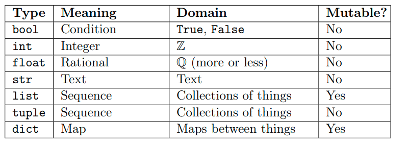
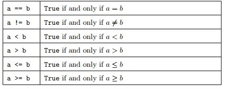
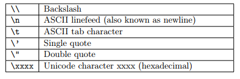
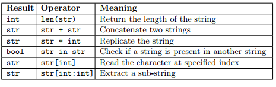

Module 1, Practical 2¶
In this practical we will start interacting more with Python, practicing on how to handle data, functions and methods. We will see several built-in data types and then dive deeper into the data type string.
Modules¶
Python modules are simply text files having the extension .py (e.g. exercise.py). When you were writing the code in the IDE in the previous practical, you were in fact implementing a module.
As said in the previous practical, once you implemented and saved the code of the module, you can execute it by typing
python3 exercise1.py
(which in Windows might be python exercise1.py, just make sure you are using python 3.x) or, in Visual Studio Code, by right clicking on the code panel and selecting Run Python File in Terminal.
For instance math is a module, and it has many functions:
math.sqrt() -> square root
math.cos() -> cosine
math.log() -> log (base E)
We have to import the module before use it, with:
[2]:
import math
let’s try
Write a program that compute the square root of 4:
[3]:
import math
res = math.sqrt(4)
print(res)
2.0
Show/Hide Solution
Why those codes are not working?
[ ]:
#########################
# 1
res = math.sqrt(4)
import math
print(res)
#########################
# 2
import math
input_val = input("insert a number")
res = math.sqrt(4)
print(res)
Note
When importing modules we do not need to specify the extension “.py” of the file.
Objects¶
Python understands very well objects, and in fact everything is an object in Python.
Objects have properties (characteristic features) and methods (things they can do). For example, an object car could be defined to have the properties model, make, color, number of doors, position etc., and the methods steer right, steer left, accelerate, break, stop, change gear, repaint,… whose application might affect the state of the object.
According to Python’s official documentation:
“Objects are Python’s abstraction for data. All data in a Python program is represented by objects or by relations between objects.”
All you need to know for now is that in Python objects have an identifier (ID) (i.e. their name), a type (numbers, text, collections,…) and a value (the actual data represented by the objects). Once an object has been created the identifier and the type never change, while its value can either change (mutable objects) or stay constant (immutable objects).
Python provides the following built-in data types:
We will stick with the simplest ones for now, but later on we will dive deeper into all of them.
Variables¶
Variables are just references to objects, in other words they are the name given to an object. Variables can be assigned to objects by using the assignment operator =.
The instruction
[6]:
sides = 4
might represent the number of sides of a square. What happens when we execute it in Python? An object is created, it is given an identifier, its type is set to “int” (an integer number), its value to 4 and a name sides is placed in the current namespace to point to that object, so that after that instruction we can access that object through its name. The type of an object can be accessed with the function type() and the identifier with the function id():
[7]:
sides = 4
print( type(sides) )
print( id(sides) )
<class 'int'>
140314339279184
Consider now the following code:
[8]:
sides = 4 #a square
print ("value:", sides, " type:", type(sides), " id:", id(sides))
sides = 5 #a pentagon
print ("value:", sides, " type:", type(sides), " id:", id(sides))
value: 4 type: <class 'int'> id: 140314339279184
value: 5 type: <class 'int'> id: 140314339279216
The value of the variable sides has been changed from 4 to 5, but as stated in the table above, the type int is immutable. Luckily, this did not prevent us to change the value of sides from 4 to 5. What happened behind the scenes when we executed the instruction sides = 5 is that a new object has been created of type int (5 is still an integer) and it has been made accessible with the same name sides, but since it is a different object (i.e. the integer 5). As a poof of this,
check that the that the identifier printed above is actually different.
Note: You do not have to really worry about what happens behind the scenes, as the Python interpreter will take care of these aspects for you, but it is nice to know what it does.
You can even change the type of a variable during execution but that is normally a bad idea as it makes understanding the code more complicated and leaves more room for errors.
Python allows you to do (but, please, REFRAIN FROM DOING SO!):
[9]:
sides = 4 #a square
print ("value:", sides, " type:", type(sides), " id:", id(sides))
sides = "four" #the sides in text format
print ("value:", sides, " type:", type(sides), " id:", id(sides))
value: 4 type: <class 'int'> id: 140314339279184
value: four type: <class 'str'> id: 140313851926128
IMPORTANT NOTE: You can choose the name that you like for your variables (I advise to pick something reminding their meaning), but you need to adhere to some simple rules.
Names can only contain upper/lower case digits (
A-Z,a-z), numbers (0-9) or underscores_;Names cannot start with a number;
Names cannot be equal to reserved keywords:
Numeric types¶
We already mentioned that numbers are immutable objects. Python provides different numeric types: integers, booleans, reals (floats) and even complex numbers and fractions (but we will not get into those).
Integers¶
Their range of values is limited only by the memory available. As we have already seen, python provides also a set of standard operators to work with numbers:
let’s try 1. Given two integer, try sum (+), subtractions (-), integer division (//), multiplication (*), power(**), division (/)
Show/Hide Solution
what is the type of a/b?
Show/Hide Solution
Note that in the latter case the result is no more an integer, but a float (we will get to that later).
Booleans¶
These objects are used for the boolean algebra. Truth values are represented with the keywords True and False in Python. A boolean object can only have value True or False. We can convert booleans into integers with the builtin function int. Any integer can be converted into a boolean (and vice-versa) with:
[14]:
a = bool(1)
b = bool(0)
c = bool(72)
d = bool(-5)
t = int(True)
f = int(False)
print("a: ", a, " b: ", b, " c: ", c, " d: ", d , " t: ", t, " f: ", f)
a: True b: False c: True d: True t: 1 f: 0
any integer is evaluated to true, except 0. Note that, the truth values True and False respectively behave like the integers 1 and 0.
We can operate on boolean values with the boolean operators and, or, not. Recall boolean algebra for their use:
[16]:
T = True
F = False
print ("T: ", T, " F:", F)
print ("T and F: ", T and F) #False
print ("T and T: ", T and T) #True
print ("F and F: ", F and F) #False
print ("not T: ", not T) # False
print ("not F: ", not F) # True
print ("T or F: ", T or F) # True
print ("T or T: ", T or T) # True
print ("F or F: ", F or F) # False
T: True F: False
T and F: False
T and T: True
F and F: False
not T: False
not F: True
T or F: True
T or T: True
F or F: False
Numeric comparators are operators that return a boolean value. Here are some examples:
Example: Given a variable a = 10 and a variable b = 77, let’s swap their values (i.e. at the end a will be equal to 77 and b to 10). Let’s also check the values at the beginning and at the end.
[17]:
a = 10
b = 77
print("a: ", a, " b:", b)
print("is a equal to 10?", a == 10)
print("is b equal to 77?", b == 77)
TMP = b #we need to store the value of b safely
b = a #ok, the old value of b is gone... is it?
a = TMP #a gets the old value of b... :-)
print("a: ", a, " b:", b)
print("is a equal to 10?", a == 10)
print("is a equal to 77?", a == 77)
print("is b equal to 10?", b == 10)
print("is b equal to 77?", b == 77)
a: 10 b: 77
is a equal to 10? True
is b equal to 77? True
a: 77 b: 10
is a equal to 10? False
is a equal to 77? True
is b equal to 10? True
is b equal to 77? False
Real numbers¶
Python stores real numbers (floating point numbers) in 64 bits of information divided in sign, exponent and mantissa.
Let’s try
Calculate the area of circle (radius = 9.15m) recalling that \(area= \Pi*R^2\):
note do you remember the Pi value? if not just use math.pi
Show/Hide Solution
Write a program to compute: \(\dfrac{\sqrt{x+3}}{(x+2)^3}\), with x = 0.000003. Result = 0.21650548492311453
Show/Hide Solution
Strings¶
Strings are immutable objects (note the actual type is str) used by python to handle text data. Strings are sequences of unicode code points that can represent characters, but also formatting information (e.g. ‘\n’ for new line). Unlike other programming languages, python does not have the data type character, which is represented as a string of length 1.
There are several ways to define a string:
[ ]:
S = "my first string, in double quotes"
S1 = 'my second string, in single quotes'
S2 = '''my third string is
in triple quotes
therefore it can span several lines'''
S3 = """my fourth string, in triple double-quotes
can also span
several lines"""
print(S, '\n') #let's add a new line at the end of the string with \n
print(S1,'\n')
print(S2, '\n')
print(S3, '\n')
To put special characters like ‘,” and so on you need to “escape them” (i.e. write them following a back-slash).
Example: Let’s print a string containing a quote and double quote (i.e. ‘ and “).
[ ]:
myString = "This is how I \'quote\' and \"double quote\" things in strings"
print(myString)
Strings can be converted to and from numbers with the functions str(), int() or float().
Example: Let’s define a string myString with the value “47001” and convert it into an int. Try adding one and print the result.
[ ]:
my_string = "47001"
print(my_string, " has type ", type(my_string))
my_int = int(my_string)
print(my_int, " has type ", type(my_int))
my_int = my_int + 1 #adds one
my_string = my_string + "1" #cannot add 1 (we need to use a string).
#This will append 1 at the end of the string
print(my_int)
print(my_string)
Be careful though that if the string cannot be converted into an integer, then you get an error
[ ]:
my_wrong_number = "13a"
N = int(my_wrong_number)
print(N)
Python defines some operators to work with strings. Recall the slides shown during the lecture:
Example
let’s print “Ciao” 100 times…
[1]:
my_string = "Ciao"
my_100_times_string = my_string*100
print(my_100_times_string)
CiaoCiaoCiaoCiaoCiaoCiaoCiaoCiaoCiaoCiaoCiaoCiaoCiaoCiaoCiaoCiaoCiaoCiaoCiaoCiaoCiaoCiaoCiaoCiaoCiaoCiaoCiaoCiaoCiaoCiaoCiaoCiaoCiaoCiaoCiaoCiaoCiaoCiaoCiaoCiaoCiaoCiaoCiaoCiaoCiaoCiaoCiaoCiaoCiaoCiaoCiaoCiaoCiaoCiaoCiaoCiaoCiaoCiaoCiaoCiaoCiaoCiaoCiaoCiaoCiaoCiaoCiaoCiaoCiaoCiaoCiaoCiaoCiaoCiaoCiaoCiaoCiaoCiaoCiaoCiaoCiaoCiaoCiaoCiaoCiaoCiaoCiaoCiaoCiaoCiaoCiaoCiaoCiaoCiaoCiaoCiaoCiaoCiaoCiaoCiao
let’s concatenate two (or more) strings
[ ]:
my_string1 = "Ciao, "
my_string2 = "How"
my_combination = my_string1 + my_string2
print(my_combination)
[2]:
my_string1 = "Ciao, "
my_string2 = "how"
my_string3 = " "
my_string4 = "are you?"
res = my_string1 + my_string2 + my_string3 + my_string4
print(res)
Ciao, How are you?
let’s create a toy example:
[3]:
my_input_string = "Hi, How are you? Do you want a beer?"
# add a new line
my_input_string = my_input_string + "\n"
# verify if the string contains "How"
print("How" in my_input_string)
# remember that it is case sensitive...
print("how" in my_input_string)
True
False
We can access strings at specific positions (indexing) or get a substring starting from a position S to a position E. The only thing to remember is that numbering starts from 0. Thei-th character of a string can be accessed as str[i-1]. Substrings can be accessed as str[S:E], optionally a third parameter can be specified to set the step (i.e. str[S:E:STEP]).
Important note. Remember that when you do str[S:E], S is inclusive, while E is exclusive (see S[0:6] below).
Let’s see these aspects in action with an example:
[5]:
S = "Luther College"
print(S) #print the whole string
print(S[0]) #first character
print(S[3]) #fourth character
print(S[-1]) #last character
print(S[0:6]) #first six characters
print(S[-7:]) #final seven characters
print(S[0:len(S):2]) #every other character starting from the first
print(S[1:len(S):2]) #every other character starting from the second
Luther College
L
h
e
Luther
College
Lte olg
uhrClee
Methods for the str object¶
The object str has some methods that can be applied to it (remember methods are things you can do on objects). Recall from the lecture that the main methods are:
IMPORTANT NOTE: Since Strings are immutable, every operation that changes the string actually produces a new str object having the modified string as value.
lets play with methods
upper and lower are easy
[7]:
my_string = "Trento"
print("original string\t",my_string)
print("upper string \t",my_string.upper())
original string Trento
upper string TRENTO
[9]:
my_string = "TrENtO"
print("original string\t",my_string)
print("lower string \t",my_string.lower())
original string TrENtO
lower string trento
in our case… sting.method()
methods like upper and lower do not take any parameter!
Others like strip or find take also parameters…
let’s see this in practice
[13]:
my_string = ">Hi how are you?>"
my_modified_sting = my_string.strip(">")
print(my_modified_sting)
Hi how are you?
we can do it only to the left lstrip or to the right rstrip
[17]:
my_string = "><> This is TRENTO! das"
fixed_left = my_string.lstrip("><>")
fixed = fixed_left.rstrip(" das")
print(fixed)
This is TRENTO!
The replace method is really intuitive…
[18]:
text = "My name is Pablo"
new_text = text.replace("Pablo","Antonio")
print(new_text)
My name is Antonio
startwith endswith
[21]:
text = "This is Trento"
# startwith
print(text.startswith("Thi"))
print(text.startswith("This"))
print(text.startswith("Thiss"))
print("\n")
# endwith
print(text.endswith("nto"))
print(text.endswith("rento"))
print(text.endswith("rrento"))
True
True
False
True
True
False
find
[24]:
text = "We are learning python3, we are also bla bla bla"
print(text.find("are")) # the first occorence
print(text.find("We"))
print(text.find("WE")) # not present
3
0
-1
rfind
[28]:
text = "We are learning python3, we are also bla bla bla"
print(text.rfind("are"))
28
[31]:
# is it true?
print(text[28:28+len("are")])
are
yes it worked :)
count just counts
[36]:
text = "Tfasjskdlftrentojasdjfkasjdjskdlfjasdlfjasdjfasdjaklsfaskljkljfdasaklantonioflasdfjklajdfwiojasflkfjasdllucakfjdiosjtalkjcjsadlfjlasd"
print(text.count("f"))
print(text.count("t"))
print(text.count("sk"))
15
4
3
Exercises¶
Given the following string on two lines:
text = """Nobody said it was easy
No one ever said it would be this hard"""
write some python code that
prints the whole string; b)prints the first and last character; c) prints the first 10 characters; d) prints from the 19th character to the e) pints the string all in capital letters.
Show/Hide Solution
given the input string S = “a 1 b 2 c 3”, replace each digit(1,2,3) with “DIGIT” and each character with “CHARACTER
Show/Hide Solution
Compute 1/7 in Python, you ll get a float, store the result in a variable, verify if:
a)It contains the number 9 b)The first six decimal are equal to the next six.
Hint: convert the float into string
Show/Hide Solution
You’ve got some money, so you decide to buy two models of supercars. Since you already know accidents are on the way, for each model you will buy as many cars as there are characters in each model name.
Write some code which stores in the string s the number of cars you will buy.
for instance
car1 = "Ferrari"
car2 = "Tesla"
then the result is:
I'll buy 7 Ferrari and 5 tesla
Show/Hide Solution
Given a small sequenze of biological stuff
bio_stuff = """SER A 96 77.253 20.522 75.007
VAL A 97 76.066 22.304 71.921
PRO A 98 77.731 23.371 68.681
SER A 99 80.136 26.246 68.973
GLN A 100 79.039 29.534 67.364
LYS A 101 81.787 32.022 68.157"""
we know that the first, second and third colums are not important, then we know that the 4th 5th and 6th columns represent x,y,z of something. you have to:
extract x,y and z of the second row and save them into variables, b) do the same for the third colum c) compute the distance. \(d((x,y,z),(x',y',z')) = \sqrt{(x-x')^2 + (y-y')^2 + (z-z')^2}\)
Show/Hide Solution
Given in input
str = "14, 625, 498.002"
convert each comma in a dot, and print it b)convert each dot in comma, and print it c)replace each dot in comma and each comma in dot.
Show/Hide Solution
Calculate the zeros of the equation \(ax^2-b = 0\) where a = 10 and b = 1. Hint: use math.sqrt or ** 0.5. Finally check that substituting the obtained value of x in the equation gives zero.
Show/Hide Solution